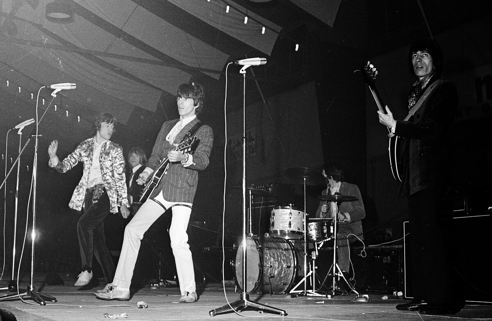

1960s rock legends are the subject of a blunt new verdict from a musician who still tours alongside them.
Robyn Hitchcock, 73 and promoting his 25th solo album, says rock and roll now belongs to senior citizens, and the Rolling Stones prove it.

Table of Contents
- A New 2026 Verdict From a Working Musician
- What Made This Generation Impossible to Replace
- Still the Reference Point, Not Just a Memory
- FAQ
A New 2026 Verdict From a Working Musician
The line comes from Robyn Hitchcock, in an interview published by MusicRadar on August 26, 2026.
Hitchcock was promoting The Confuser, his 25th solo album and first new record in four years.
Asked about aging in a genre built on youth, he said rock and roll is for senior citizens now.
However strange that feels, he added, you only need to look at the Rolling Stones.
He called them far older and further down the same road.
Hitchcock is 73 himself, which he treats as the joke.
He put the Rolling Stones, Paul McCartney and Bob Dylan ahead of him on that road.
The trio is still setting the pace decades after they were supposed to have handed it off.
By his own framing, a musician in his seventies still counts as a spry youngster waiting behind them.
What Made 1960s Rock Legends Impossible to Replace
Hitchcock's joke lands because the math backs him up.
Inside one twelve month stretch, the Beatles released Rubber Soul in December 1965 and Revolver in August 1966.
Dylan released Blonde on Blonde that same May.
Each record reset what a rock or folk song was allowed to do, from studio experimentation to lyrics that read like literature.
The Rolling Stones hit their own commercial peak in that window.
"(I Can't Get No) Satisfaction" topped the charts in 1965.
No later scene has matched that concentration of output from acts still touring six decades on.
Grunge, Britpop and every arena-rock generation since has produced its own stars.
None of them get named in the same breath as the ceiling.
Read the full story in our Rolling Stones profile and Beatles profile.
Still the Reference Point, Not Just a Memory
What makes Hitchcock's comment trend isn't nostalgia, it's timing.
He gave the quote while announcing a UK and European tour starting September 2026.
That's the same week reflection pieces on rock's aging pioneers were already circulating.
A working artist naming the Rolling Stones, McCartney and Dylan in 2026 is a stronger signal than any retrospective list.
It means the benchmark still has a pulse.
Dylan's own arc runs through the folk rock lane he helped invent.
"Like a Rolling Stone" rewired what a hit single was allowed to say.
Full interview: MusicRadar, August 26, 2026.
Background on Hitchcock's own catalog is on Wikipedia.
FAQ
Who are considered rock's greatest legends from the 1960s?
Most rankings put the Beatles, the Rolling Stones and Bob Dylan at the top.
Acts like the Who, the Kinks and Jimi Hendrix usually follow close behind.
Did Robyn Hitchcock really say rock and roll is for senior citizens?
Yes, in an August 2026 MusicRadar interview promoting his new album The Confuser.
He pointed to the Rolling Stones as proof.
Are the Rolling Stones and Bob Dylan still touring in 2026?
Both remain active performers into their eighties.
That's the exact point Hitchcock's interview was making about rock's founding generation.
What made the 1960s the golden age of rock music?
A run of albums released within one twelve month stretch reset the genre.
Rubber Soul, Revolver and Blonde on Blonde are the three most often named.
Has a newer generation replaced rock's 1960s giants?
No consensus successor exists.
Working musicians decades younger, including Hitchcock himself, still describe themselves relative to that original group by name.
This one joins the rest of the Trending section.
For more from the British Invasion era, try our 1960s trivia game.
Back to the 1960smusic.net homepage, where these 1960s rock legends still share the stage with every other genre of the decade.